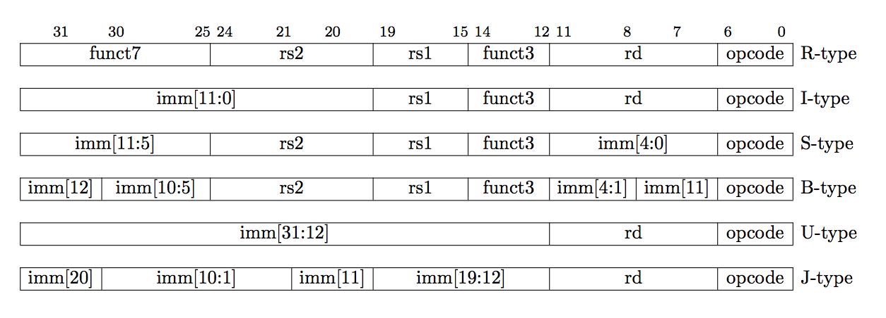
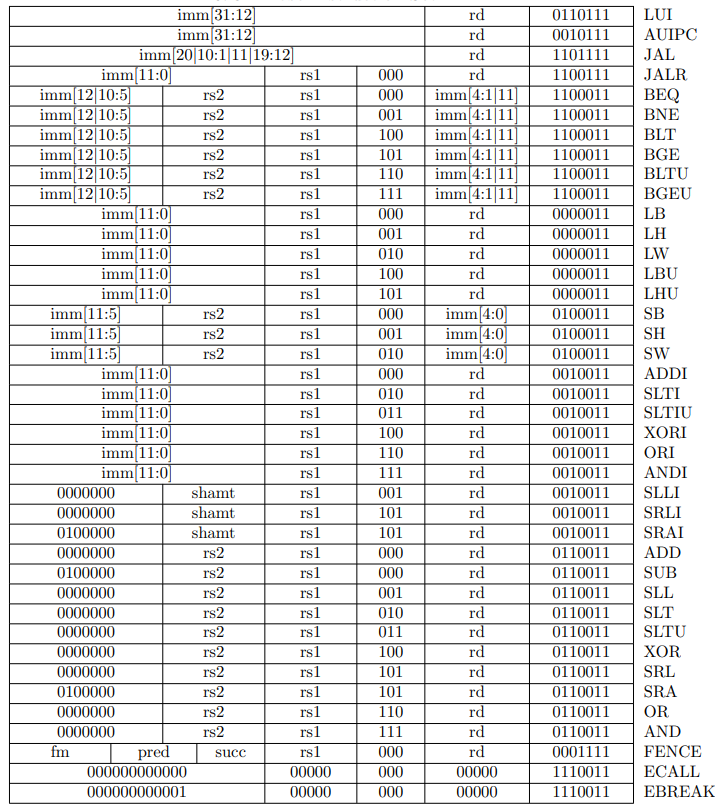

1. Instruction Length
RISC-V指令是定长的32bit，但是拓展可以支持变长。变长一定是16bit的整数倍。
encoding convension要求所有32bit指令长度的命令最低两位一定是11. 注意RISC-V是小端的指令集。对于>32bit长度的指令格式，同样要求满足这个要求，因此对于16bit指令长度，要求最低两位一定不是11。
当然对于non-standard指令格式，RISC-V可以是大端的。
2. RV32I
RV32I是最基础的指令集，也是任何RISC-V实现必须实现的指令集。RV32I包括了47条独特指令，另外，实现可以选择使用总是trap的系统（SYSTEM）硬件指令代替 8 条 SCALL / SBREAK / RD* 指令，可以讲指令集减少到40条；如果还能够实现FENCE和FENC.I，那么可以将指令总数减少到38条。RV32I 能够模拟几乎所有的 ISA 扩展（除了 A 扩展，它需要额外的硬件来支持原子性（atomicity））。
RV32I was designed to be sufficient to form a compiler target and to support modern operating system environments. The ISA was also designed to reduce the hardware required in a minimal implementation. RV32I contains 47 unique instructions, though a simple implementation might cover the eight SCALL/SBREAK/CSRR* instructions with a single SYSTEM hardware instruction that always traps and might be able to implement the FENCE and FENCE.I instructions as NOPs, reducing hardware instruction count to 38 total. RV32I can emulate almost any other ISA extension (except the A extension, which requires additional hardware support for atomicity).
RV32I包括了32个32bit的通用寄存器(x0-x31)外加一个用户可见的pc寄存器。32个通用寄存器其中x0固定为全0，x1一般用于保存返回值。详细的register convension参考较早文章。
2.1. opcode layout
RISC-V设计几个理念：
- 所有的layout格式尽量共享位置的意义的定义
- 比如所有的指令的r0，r1，rd位置都固定index
- 尽量减少指令额外的计算，比如预先进行shift，只使用符号扩展
RV32I包括了4种基本格式(R/I/S/U)和两种变化格式(B/J)：

可以看到寄存器的位置是固定的。
2.2. 整数指令
首先需要注意到，opcode的长度是8个bit，去掉固定为11的最低两位，能用的opcode长度是6bit，也就是说最多支持2^6=64条指令。但实际上，RV32I中的很多指令是公用opcode的，通过额外参数来区分具体的action。
比如ADD和SUB就共享opcode。完整的列表如下：

- LUI: load imm into register
- AUIPC: add imm to pc
- JAL: unconditional direct jump
- JALR: unconditional indirect jump
- BEQ: conditional branch when equal
- BNE: conditional branch when not equal
- BLT: conditional branch when r1 < r2
- BGE: conditional branch when r1 > r2
- BLTU: conditional branch when r1 < r2 as unsinged
- BGEU: conditional branch when r1 > r2 as unsinged
- LB: load 8bit value from memory into register
- LH: load 16bit value from memory into register
- LW: load 32bit value from memory into register
- LBU: load 8bit unsigned value from memory into register
- LHU: load 16bit unsigned value from memory into register
- SB: store 8bit value from register to memory
- SH: store 16bit value from register to memory
- SW: store 32bit value from register to memory
- ADDI: adds the sign-extended 12-bit immediate with r1 to rd
- SLTI: put 1 into register if r1 < signed extend imm otherwise 0
- SLTIU: put 1 into register if r1 < r2 extend imm as unsigned otherwise 0
- XORI: xor the sign-extended 12-bit immediate with r1 to rd
- ORI: or the sign-extended 12-bit immediate with r1 to rd
- ANDI: and the sign-extended 12-bit immediate with r1 to rd
- SLLI: logical left shift register value imm bits
- SRLI: logical right shift register value imm bits
- SRAI: arithmetic right shift register value imm bits
shift - ADD: add
- SUB: sub
- SLL: logical left shift r1 value low 5 bits value of r2
- SLT: put 1 into register if r1 < r2 otherwise 0
- SLTU: put 1 into register if r1 < r2 as unsignedotherwise 0
- XOR: xor
- SRL: logical right shift r1 value low 5 bits value of r2
- SRA: arithmetic right shift r1 value low 5 bits value of r2
- OR: or
- AND: and
- FENCE: memory fence
- ECALL：Trap to System Call
- EBREAK: DEBUG mode break
一些注解
- RISC-V的FENCE可以玩组合:
Any combination of device input (I), device output (O), memory reads (R), and memory writes (W) may be ordered with respect to any combination of the same.
- RISC-V是没有Overflow Flag:
下面引自官方文档：
We did not include special instruction-set support for overflow checks on integer arithmetic operations in the base instruction set, as many overflow checks can be cheaply implemented using RISC-V branches. Overflow checking for unsigned addition requires only a single additional branch instruction after the addition: add t0, t1, t2; bltu t0, t1, overflow.
For signed addition, if one operand’s sign is known, overflow checking requires only a single branch after the addition: addi t0, t1, +imm; blt t0, t1, overflow. This covers the common case of addition with an immediate operand.
For general signed addition, three additional instructions after the addition are required, leveraging the observation that the sum should be less than one of the operands if and only if the other operand is negative.
1 | add t0, t1, t2 |
In RV64I, checks of 32-bit signed additions can be optimized further by comparing the results of ADD and ADDW on the operands.
简单来说，检查是否overflow没有flag给你用（为了简化电路设计，另外overflow用处不大），而是用指令+branch来进行判断，详细而言分成3中情况：
- unsigned相加，那么没有overflow意味着 rd > r1 && rd > r2，当然对于imm版本只需要检测rd > r1
- signed imm相加，如果imm符号知道，那么判断rd > r1或者rd < r1
- 剩下的就需要好几条指令来判断了
- NOP命令:
不存在的，可以用ADD r1, r1, r0来代替。拓展指令集可能加入单独的NOP指令。
- 状态寄存器:
不存在的+1。老版本的文档将CSR相关命令列到RV32I下面；当前文档(draft-20191114-0777770)单独拆到了一章：“Zicsr”, Control and Status Register
(CSR) Instructions, Version 2.0
因此也不存在用于比较的EFLAGS，所有的条件跳转都是比较具体的两个寄存器或者寄存器和imm的值。
说到底也是为了简化系统的设计。
3. RV64I
和RV64I非常类似，差别在于：
- 寄存器宽度变成了64bit
- 扩展了64bit宽度的指令LD/SD (double word)
- 增加了单独处理32bit的指令(ADD之类的现在等是64bit的)
- ADDIW/SLLW/SRLW/SUBW/SRAW
- 注意移位操作offset bits还是5bit
- 移位操作的offset bits因为64bit=32bit*2，从5bit”升级”成6bit
其实RV128I指令集的拓展也类似，理论上可以拓展到imm无法支持offset bits的描述，但在此之前，量子计算机应该出来吧。